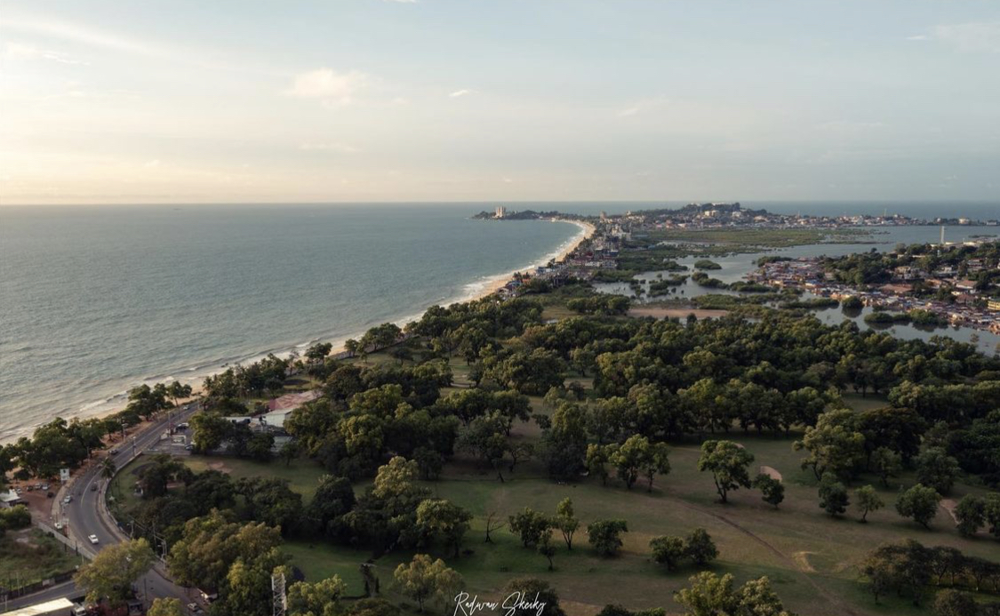

Lumley Beach Road
- The most popular beach in Freetown
- 2.5 miles long filled with beach bars, restaurants, resorts, and shops
- Play soccer on the beach, some go on outings
- Ages: All ages are welcome
- Cost: Free
#2 River Beach
- Most beautiful beach in Sierra Leone, with white sands and the range of mountains all around
- The name comes from there being a river next to a beach
- People go there for beach outings, especially on holidays like New Years Day, Easter and Boxing Day
- Ages: All ages are welcome
- Cost: Free

Banana & Bunce Island Tour
- Beautiful historic island full of backyard gardens, big breadfruit trees and rare and delightful butterflies
- It also served as a transit centre for slaves from different parts of the Sierra Leone. Slaves who were deemed fit and healthy to travel were sent on from here
- It is a 30 min boatride to the Islands. This is a full day tour where you can hike, swim and snorkel
- Ages: All ages are welcome
- Cost: $50
Tacugama Chimapanzee Sanctuary
- Located just on the outskirts of Freetown
- Initially established to enforce wildlife laws and rescue and rehabilitate orphaned chimpanzees. It now cares for close to 100 chimpanzees on-site
- Tacugama is also home to 6 eco-lodges, and a variety of activities for both tourists and Freetowners alike to participate in
- Ages: All ages are welcome
- Cost: $15